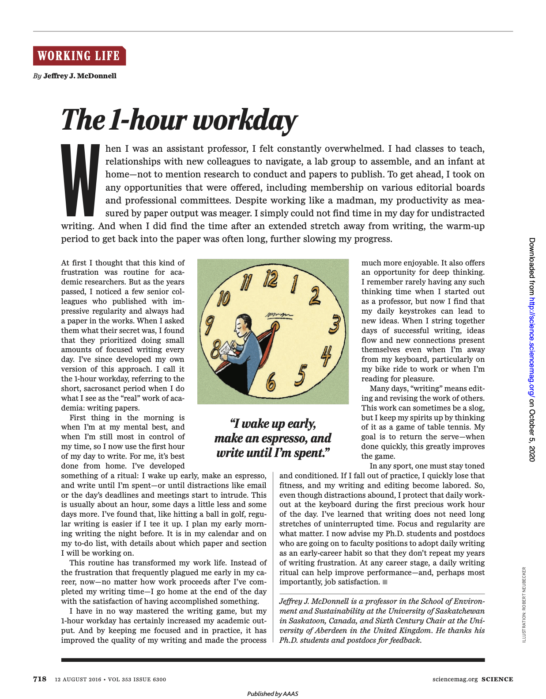

[인생] 매일 한 시간씩 **하기
슬럼프 탈출에 도움이 되는 팁

박제를 위한 기록
몇년 전에 후배의 페북 포스팅을 통해서 알게 된 글인데, 슬럼프에 빠져있었던 시기에 벗어나기 위한 과정에서 참고했던 좋은 글이다.
이 글의 제목은 ‘The 1-hour workday'인데, 초임 교수 시절 연구-강의-회의-논문 쓰기-육아 등 다양한 업무에 치여서 이것도 저것도 아닌 생활을 했던 저자가 어려움을 벗어나기 위해서 매일 1시간씩 논문을 쓰게 된 경험을 소개해 주는 글이다.
- 이 글은 Science 매거진에 기고된 The 1-hour workday라는 글이 원문이고, 한국 블로거가 매일 한 시간씩 논문 쓰기라고 번역을 하였다.

최근에 또 이 글을 찾게 되었는데, 다음에 또 찾게 될까봐 블로그에 포스팅을 남겨서 박제해 두기로 하였다.
- 당시 이 글을 참고해서 일명
555프로젝트를 했던 적이 있다. 매일 새벽 5:55분에 알람을 맞춰두고, 일어나서 커피를 마시고 1시간 가량 생산적인 일을 하고자 했던 시기다. - 이래저래 시간이 흐르고 또 이 글을 참고하고 싶었던 순간들이 있어서, 여러군데 기록을 하고 메모를 해두었지만, 또 찾고 또 찾고를 반복해서 아예 박제를 해두려고 포스팅을 하게 되었다.
일상 회복이 필요한 경우
이 글은 논문을 쓰지 않는 일반인에게도 도움이 되는 글이다. 논문 쓰기를 운동 하기, 유튜브 만들기, 블로그 쓰기 등등 본인이 하는 다른 일로 바꾸면 그대로 적용할 수 있다. 번아웃, 슬럼프 등으로 삶이 힘들 때, 한번 참고해 보면 좋다.
- ‘논문 쓰기'는 교수, 연구원 등 일부 연구자들만의 특수한 업무이지만, 논문을 쓰지 않는 사람이라도 공감할 수 있는 지점이 많았다. 특히, 육아와 사회생활 등의 여러 레이어가 겹치는 순간을 처음 겪을 때 이리저리 방황하는 순간들이 있는데, 이 글은 그런 점에서 도움이 된다.
- 또한 살다보면 종종 뭔가 새로운 일상을 위한 전환점이 필요할 경우들이 많은데, 그러한 경우에도 이 글의 팁이 도움이 된다.
매일 한시간씩 집중해서 조금씩 쓰기
이 글은 한마디로, "매일 한시간씩 집중해서 조금씩 써라"라는 것이 핵심이다.
매일은 꾸준히 습관처럼 하라는 의미다. 이를 위해서 하루 한 시간을 보호하기 위한 규칙이 필요하고, 이를 지키기 위해서는 가족이나 동료들을 설득하고 협조를 얻어내야 한다.- “만약 연습을 빼먹으면 바로 폼이 나오지 않듯이, 매일매일의 논문 쓰는 과정을 빼먹으면 이 과정이 점점 힘들어진다. 따라서 주변에 다른 할일이 아무리 많다고 하더라도, 나는 키보드를 가지고 하는 매일매일의 ‘논문쓰기 운동’ 시간을 꼭 보호하려고 하고 있다.”
한시간씩은 매일 할 수 있을 정도의 시간이다. 일상을 헤치지 않으면서도, 뭔가 성과는 낼 수 있는 정도의 시간이다. 사람에 따라 30분 혹은 2시간이 될 수도 있다.집중해서는 방해 받지 않는 시간이다. 저자는 “이메일이 오거나, 약속, 혹은 마감 등등 나를 방해하는 것이 생길때까지 논문을 쓴다.“라고 표현하였다.조금씩은 ‘매일 한시간씩'과 유사한 표현인데, 한번에 완성하고자 하는 것보다는 꾸준히 부분 부분을 채워가는 방식을 의미한다. 우리말에시나브로라는 말처럼 ‘모르는 사이에 조금씩 조금씩'한 것이 쌓이다보면 결국 성과가 될 수 있는 어떤 생활 습관이자 패턴을 강조하는 의미도 해석할 수 있다.
저자는 이러한 루틴이 효율적으로 진행되기 위한 팁도 알려주는데, 바로 “전날 밤에 다음날 아침 무엇을 쓸 것인지 계획을 세운다.“라는 것이다.
- 매일 매일의 습관을 위해서 전날에 미리 준비하는 것이 웜업을 위한 시간을 줄여주고, 습관을 지속하는 것도 더 쉬워질 수 있다.
좌절로 채워진 일상이 성취로 채워진다
이러한 루틴이 정착하게 되면서 얻게되는 가장 큰 이득은 언제든 좌절보다 성취가 일상을 채운다는 긍정적인 기운이다. 일에 쫓기는 것이 아니라 내가 일을 주도해 나가는 것을 느낄 수 있고, 매일 매일이 좌절에 의한 부정적인 감정에서, 언제든 성취했다는 긍정적인 감정으로 충만해 질 수 있는 것이 이 루틴이 주는 가장 큰 결과라고 생각된다. 저자가 얻게된 새로운 생산성은 아래와 같다.
- “내가 초짜 교수시절에 경험하던 좌절 대신에, 얼마나 일을 했건 간에 집에 뭔가 성취했다는 느낌을 가지고 집에 가게 된다.”
- “그렇지만 이렇게 하루에 한시간 논문쓰기가 익숙해짐에 따라서 나의 학문적인 아웃풋은 증가했다. 그리고 논문쓰는데 집중함으로써 논문의 질도 좋아졌고, 논문쓰는 과정도 좀 더 즐거워졌다. 그리고 깊게 생각할 수 있는 기회도 얻었다.”
- “그러나 이제 나는 이렇게 매일 논문을 쓰면서 새로운 아이디어를 얻는다. 이렇게 며칠간 논문을 잘 쓴 다음에는 논문을 쓰지 않는 와중, 가령 자전거를 타면서 운동을 하는 와중에서도 저절로 아이디어가 샘솟고, 이들간의 연결이 절로 생겨난다.”
아래 대목도 흥미롭다. 다른 사람과 일을 하는 것도 ‘핑퐁 게임'처럼 바뀔 수 있다는 것이다. 이는 좋은 팀 리더의 자질이기도 한데, 관련 유튜브(일 잘하는 팀장이 팀을 장악할 때 쓰는 비밀 기술)도 참고할 만한다.
종종 “논문을 쓰는 일” 은 남이 쓴 논문을 편집하거나 교정보는 것도 포함된다. 물론 이런 일들은 내가 처음부터 논문을 쓰는 것보다 지겨울수도 있다. 그러나 이런 것을 즐겁게 하기 위해서는 마치 탁구를 치는 것을 연상하면 좋다. 즉 내 목표는 ‘서브’ 를 리시브해서 상대편에게 되돌려 주는 것이다. 만약 이 일을 빨리 마칠 수 있다면, 논문 쓰기 게임 자체가 향상된다.
집중과 규칙이 제일 중요하다
매일 매일 집중할 수 있는 시간을 가질 수 있느냐 없느냐의 여부는 별것 아닌 일상일 수 있지만, 그것이 만들어내는 차이는 생각보다 크다. 인생은 때로는 반복되는 일상에 무료해지거나 나태해지고, 불확실한 미래로 인해서 고민과 좌절에 빠지는 경우도 반복되는 것 같다. 이런 경우마다 악순환을 끊어내고 새로운 시작을 위한 어떤 터닝 포인트가 필요한 경우가 많은데, 위 글처럼 ‘집중'과 ‘규칙'을 통해서 일상을 루틴을 만드는 것도 큰 도움이 되는 것 같다. 언제 또 이글을 다시 찾게될 것이지만, 다시 마음을 잡고 실행해 보자.
)